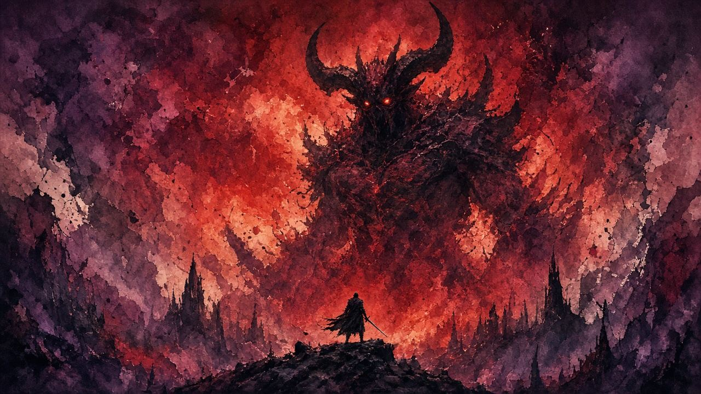

第一條血
- 偷襲忍殺最值。冇偷到就繞腳打。
- 抓、飛踢、高舉砸、站踢。抓先係即死。
- 爆竹或者火，開窗砍兩至四刀就收。


前期袋入面通常得葫蘆、丸藥、同你肯唔肯行多兩步買嘅爆竹。噴火筒要去過平田先有。
每張卡鎖一段公開 YouTube。城外出場用片主自己嘅章節（0:05–1:10）。單招用成條短片，由 0 秒放到片尾。開頁自動嵌 youtube-nocookie。
預兆：城外鬼佛一帶，戰場供養商人
500 錢買爆竹，返佛師裝上先打。紅眼野獸食爆竹會硬直
0:00–1:24 · ElAa4fyyc1o @ 0:00 → · RPG Division · 商人位置全片
預兆：新城、攻擊力未堆，樓梯上下仲有槍兵
先清槍兵。高處跳落可以偷一記忍殺。之後只打安全窗，唔好同雜兵夾擊
0:00–0:44 · 1C-TfrHCCEc @ 0:00 → · Henriks Gaming · 城外 FAST KILL 全片
預兆：片主章節：0:05 開打，1:10 收結。標明 Ashina Outskirts
跟全段睇兩條血。呢隻先係城外第一隻，唔好當城內再遇嗰隻
0:05–1:10 · Y5V9UAzMY84 @ 0:05 → · DERWID · 章節 VERIFIED · 新城無傷
預兆：紅字。蹲低張手，或者遠距離衝埋嚟。追蹤好犀利
唔好格、唔好擋。貼身向側前閃，或者垂直跳再空踢。遠距離直線跑多數被追上
0:00–0:21 · kEs7t9WJ6_8 @ 0:00 → · LightningBlade777 · 跳踢破抓全片
預兆：起腳，身體橫飛過嚟，距離遠都中。太早走會被拐彎
等佢離地先側移。踢同砸可以格；抓先至唔可以
0:00–0:43 · _rB3Pwq05eM @ 0:00 → · vairusmannaro · 90° 飛踢全片
預兆：GameWith 招式片：站踢、高舉砸、抓，同一條片睇完
踢同砸：格或者閃，打完最多兩刀。抓：見紅字就走，唔好當普通拳
0:00–1:20 · lyBqHSCKog8 @ 0:00 → · GameWith · Tips & Movesets 全片
預兆：先淋油，再噴火。紅眼燒着會企定一段
燒住先砍。噴火筒喺平田。未去平田就用爆竹，唔使專程為佢跑完全張地圖
0:00–2:01 · KXnzQzhuE4g @ 0:00 → · obligatory · OIL & FIRE 全片
預兆：無護符、劍のみ、城外無傷。冇爆竹都要識走位
繞住佢對腳。紅字只閃。打完即收。學識呢套，爆竹只係加快
0:00–1:30 · Eq_inbup_Fw @ 0:00 → · verkehrs1nsel · 城外劍のみ全片
硬核祝福：全程劍のみ都過到，睇 劍のみ卡。爆竹係加快，唔係命根。
單招鎖窗喺上面卡片。呢條係口播全攻略，由頭睇到尾。
清雜兵、唔好盲格、繞腳。全片 4:23 · 鎖窗 0:00–4:23
短片鎖全片長度。城外無傷片用作者自己寫嘅章節，唔係估秒。冇專用「爆竹打中鬼」短片，爆竹窗用商人片＋口播，實戰硬直睇油火片同速殺片。
招式唔清楚、想加邊個 Boss、有錯漏——丢句說話。留言經 Netlify Forms 直達網主信箱／後台，唔再只係本機保存。
你嘅意見已送出俾網主。想再講可以繼續填。